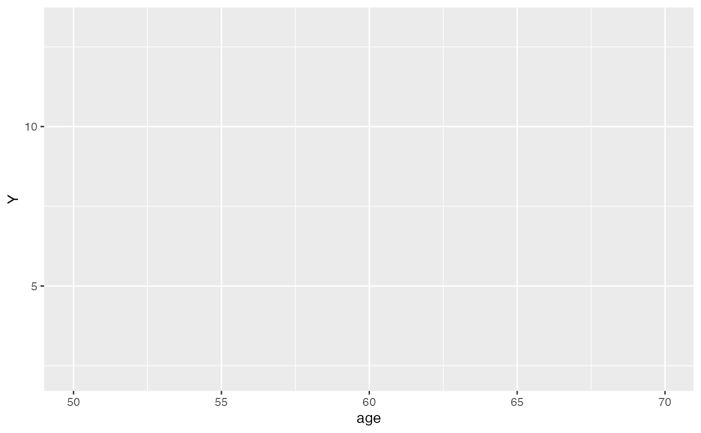

Natural Experiments and Quasi-Random Variation
natural-experiments.Rmd🌠Natural Experiments in Causal Inference
Natural experiments use external, unplanned variation to estimate causal effects when randomization is not possible. Examples include policy changes, eligibility cutoffs, or geographic variation.
1. 🯠Simulate a Sharp Cutoff (e.g., policy eligibility at age 60)
set.seed(42)
n <- 1000
age <- runif(n, 50, 70)
treatment <- ifelse(age >= 60, 1, 0)
noise <- rnorm(n)
Y <- 3 * treatment + 0.1 * age + noise # treatment has causal effect of 3
df <- data.frame(age, treatment, Y)
head(df)## age treatment Y
## 1 68.29612 1 10.858753
## 2 68.74151 1 10.788926
## 3 55.72279 0 5.569823
## 4 66.60895 1 9.796905
## 5 62.83491 1 8.563337
## 6 60.38192 1 8.8400682. 📊 Visualize the Discontinuity
ggplot(df, aes(x = age, y = Y, color = factor(treatment))) +
geom_point(alpha = 0.5) +
geom_smooth(method = "lm", se = FALSE) +
geom_vline(xintercept = 60, linetype = "dashed", color = "red") +
labs(title = "Sharp Regression Discontinuity at Age 60",
x = "Age", y = "Outcome", color = "Treatment") +
theme_minimal()
3. 🧪 Estimate Local Treatment Effect Near Cutoff
local_data <- df %>% filter(age >= 58 & age <= 62)
rd_model <- lm(Y ~ treatment + age, data = local_data)
summary(rd_model)##
## Call:
## lm(formula = Y ~ treatment + age, data = local_data)
##
## Residuals:
## Min 1Q Median 3Q Max
## -2.59404 -0.58844 0.05258 0.59860 2.61584
##
## Coefficients:
## Estimate Std. Error t value Pr(>|t|)
## (Intercept) 5.570704 7.148219 0.779 0.437
## treatment 3.304646 0.263174 12.557 <2e-16 ***
## age 0.005634 0.120973 0.047 0.963
## ---
## Signif. codes: 0 '***' 0.001 '**' 0.01 '*' 0.05 '.' 0.1 ' ' 1
##
## Residual standard error: 0.9587 on 199 degrees of freedom
## Multiple R-squared: 0.7517, Adjusted R-squared: 0.7492
## F-statistic: 301.2 on 2 and 199 DF, p-value: < 2.2e-164. ✅ Assumptions of RD Design
- No manipulation around the cutoff (check density)
- Continuity in covariates and potential outcomes
- Precise cutoff for assignment
5. 📚 Real-World Examples
- 📠College access based on test scores
- 💼 Job subsidies based on firm size
- 💊 Treatment access based on age or income cutoffs